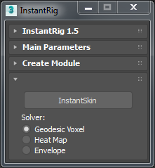

InstantSkin¶
Once rig is builded, InstantSkin panel will be appear if root control is selected. Keep root control selected and control+click meshes you want to skin. After choose which solver you want to use, click InstantSkin.
Warning
Gedodesic Voxel and Heat Map solvers are only available Max 2017 or higher.
- Geodesic Voxel:
- Designed to work with meshes that may contain non-manifold, non-watertight, intersecting triangles or are comprised of multiple connected components.
- Heat Map:
- It works better on water-tight models that are fairly uniform.
- Envelope:
- Max default skin solver.
For more information about skinning solvers please check Autodesk Help.